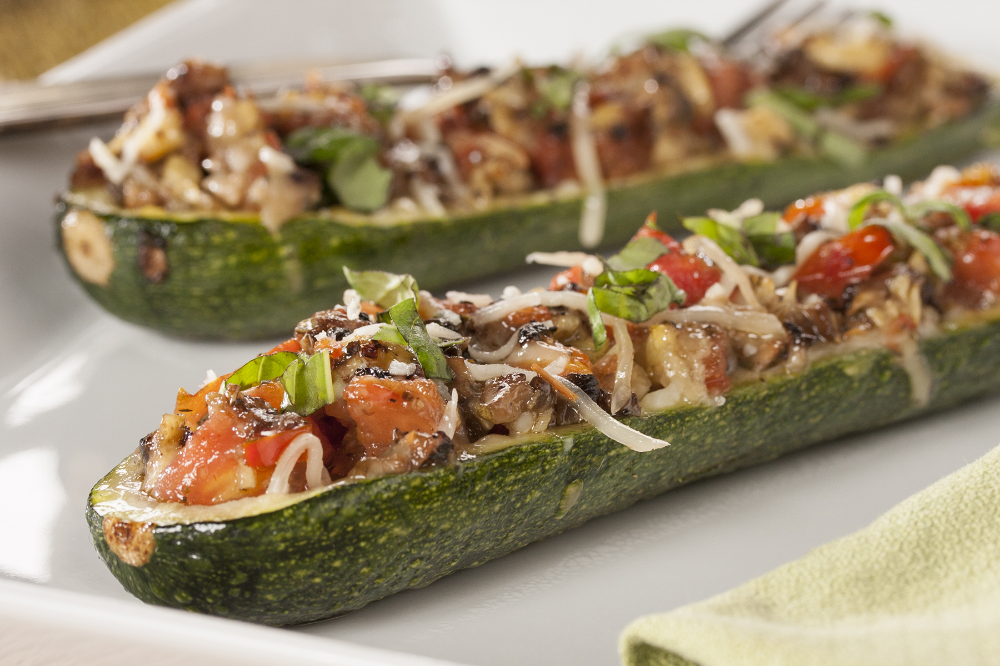

Italian Stuffed Zucchini

Desciption
The recipe requires you to have a oven, pasta sauce, Parmasen cheese
and zucchini
Choose the best zucchini out there to make this recipe delicious.
Ingredients
- 1 Zucchini
- 2 tablespoon italian-style bread crumbs
- 2 tables spoon grated Parmasen cheese
- 2/3 cup frozen burger-style crumbles
- 1/2 cup spaghetti sauce
- 1/4 cup shredded mozzarella cheese
Steps
- Prehead the oven to 350 degress F
- Slice each zucchini in half lengthwise
- Hollo out the zucchini
-
combine scraped zucchini, bread crumbs, parmasen cheese,
burger-style crumbles, pasta sauce
- Mix well
- Place mixture in hollowed out zucchini
- Arrange zucchini, sprinkle mozzarella cheese
- Bake for 40 minutes